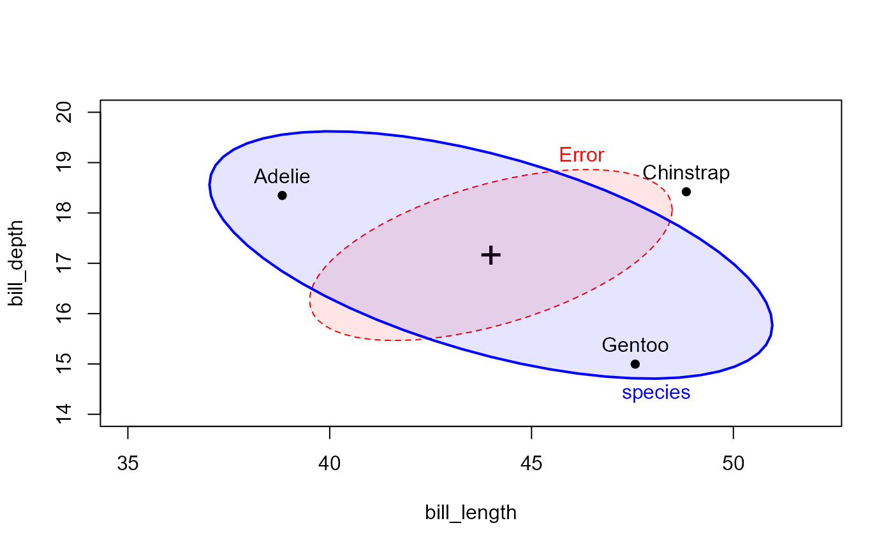
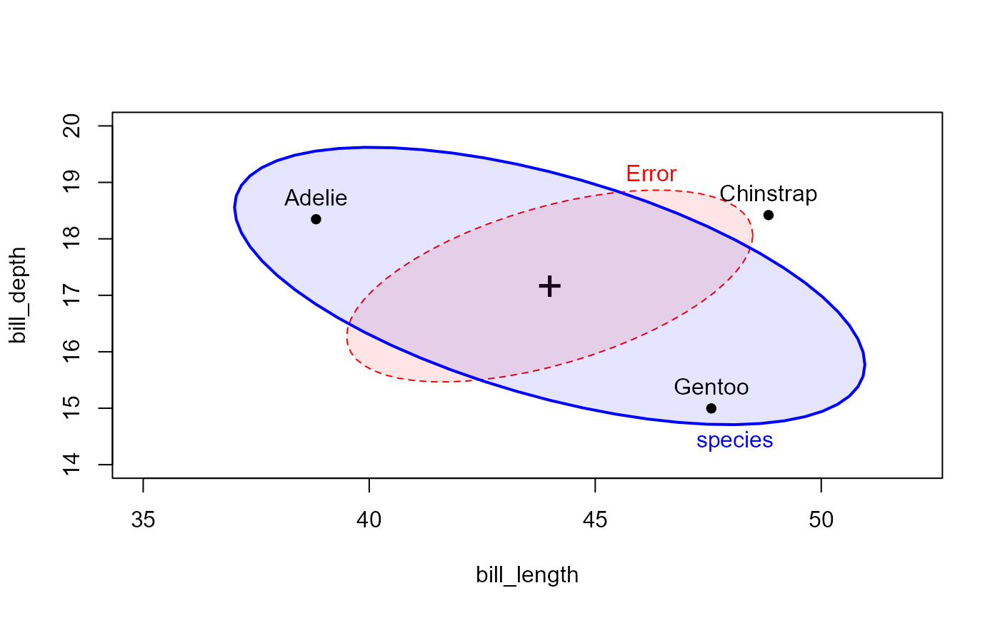

Data originally from palmerpenguins. Includes
measurements for penguin species, island in Palmer Archipelago,
size (flipper length, body mass, bill dimensions), and sex.
Format
A tibble with 333 rows and 8 variables:
- species
a factor denoting penguin species (
"Adélie", "Chinstrap" or "Gentoo")- island
a factor denoting island in Palmer Archipelago, Antarctica (
"Biscoe", "Dream" or "Torgersen")- bill_length
a number denoting bill length (millimeters)
- bill_depth
a number denoting bill depth (millimeters)
- flipper_length
an integer denoting flipper length (millimeters)
- body_mass
an integer denoting body mass (grams)
- sex
a factor denoting penguin sex (
"f", "m")- year
an integer denoting the study year (2007, 2008, or 2009)
Source
Adélie penguins: Palmer Station Antarctica LTER and K. Gorman. 2020. Structural size measurements and isotopic signatures of foraging among adult male and female Adélie penguins (Pygoscelis adeliae) nesting along the Palmer Archipelago near Palmer Station, 2007-2009 ver 5. Environmental Data Initiative doi:10.6073/pasta/98b16d7d563f265cb52372c8ca99e60f
Gentoo penguins: Palmer Station Antarctica LTER and K. Gorman. 2020. Structural size measurements and isotopic signatures of foraging among adult male and female Gentoo penguin (Pygoscelis papua) nesting along the Palmer Archipelago near Palmer Station, 2007-2009 ver 5. Environmental Data Initiative doi:10.6073/pasta/7fca67fb28d56ee2ffa3d9370ebda689
Chinstrap penguins: Palmer Station Antarctica LTER and K. Gorman. 2020. Structural size measurements and isotopic signatures of foraging among adult male and female Chinstrap penguin (Pygoscelis antarcticus) nesting along the Palmer Archipelago near Palmer Station, 2007-2009 ver 6. Environmental Data Initiative doi:10.6073/pasta/c14dfcfada8ea13a17536e73eb6fbe9e
Originally published in: Gorman K.B., Williams T.D., Fraser W.R. (2014) Ecological Sexual Dimorphism and Environmental Variability within a Community of Antarctic Penguins (Genus Pygoscelis). PLoS ONE 9(3): e90081. doi:10.1371/journal.pone.0090081
Details
In this version, variable names have been shortened (removing units) and observations with missing data have been removed.
Examples
data(peng)
# Covariance ellipses, centered, first two variables
covEllipses(cbind(bill_length, bill_depth) ~ species, data=peng,
center=TRUE,
fill=c(rep(FALSE,3), TRUE),
fill.alpha=.1, label.pos=c(1:3,0))
 # All pairs when more than two variables are specified. They look pretty similar
covEllipses(peng[,3:6], peng$species,
variables=1:4,
fill=c(rep(FALSE,3), TRUE),
fill.alpha=.1)
# All pairs when more than two variables are specified. They look pretty similar
covEllipses(peng[,3:6], peng$species,
variables=1:4,
fill=c(rep(FALSE,3), TRUE),
fill.alpha=.1)
 # Box's M test
peng.boxm <- boxM(cbind(bill_length, bill_depth, flipper_length, body_mass) ~ species, data=peng)
peng.boxm
#>
#> Box's M-test for Homogeneity of Covariance Matrices
#>
#> data: peng
#> Chi-Sq (approx.) = 74.731, df = 20, p-value = 3.02e-08
#>
plot(peng.boxm, gplabel="Species")
# Box's M test
peng.boxm <- boxM(cbind(bill_length, bill_depth, flipper_length, body_mass) ~ species, data=peng)
peng.boxm
#>
#> Box's M-test for Homogeneity of Covariance Matrices
#>
#> data: peng
#> Chi-Sq (approx.) = 74.731, df = 20, p-value = 3.02e-08
#>
plot(peng.boxm, gplabel="Species")
 # Fit MANOVA model, predicting species
peng.mod0 <-lm(cbind(bill_length, bill_depth, flipper_length, body_mass) ~
species, data=peng)
car::Anova(peng.mod0)
#>
#> Type II MANOVA Tests: Pillai test statistic
#> Df test stat approx F num Df den Df Pr(>F)
#> species 2 1.6379 370.89 8 656 < 2.2e-16 ***
#> ---
#> Signif. codes: 0 '***' 0.001 '**' 0.01 '*' 0.05 '.' 0.1 ' ' 1
# HE plot
heplot(peng.mod0, fill=TRUE, fill.alpha=0.1,
size="effect",
xlim=c(35,52), ylim=c(14,20))

# Fit MANOVA model, predicting species
peng.mod0 <-lm(cbind(bill_length, bill_depth, flipper_length, body_mass) ~
species, data=peng)
car::Anova(peng.mod0)
#>
#> Type II MANOVA Tests: Pillai test statistic
#> Df test stat approx F num Df den Df Pr(>F)
#> species 2 1.6379 370.89 8 656 < 2.2e-16 ***
#> ---
#> Signif. codes: 0 '***' 0.001 '**' 0.01 '*' 0.05 '.' 0.1 ' ' 1
# HE plot
heplot(peng.mod0, fill=TRUE, fill.alpha=0.1,
size="effect",
xlim=c(35,52), ylim=c(14,20))
